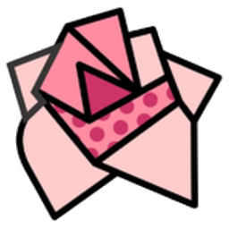

Que tipo de começo?
Tamanho
O mapa de agora não some: ele continua guardado em 📁 Meus mapas.
Para o Minecraft, o gerador usa o arquivo do projeto (💾 Salvar). A geração do mundo vem na próxima etapa.
Os mapas ficam guardados neste navegador, neste computador. Para levar a outro lugar ou ter uma cópia segura, use 💾 Salvar ou o backup.
Tire uma foto do mapa desenhado no papel — de cima, com boa luz e a folha inteira aparecendo. Cada cor do desenho vai virar um bioma.
A foto não sai deste aparelho: tudo é feito aqui no navegador.
Passo 2: arraste as 4 bolinhas para os cantos do desenho.
Passo 3: diga qual bioma é cada cor (igual à legenda do desenho). Passe o mouse numa cor para ver onde ela está.